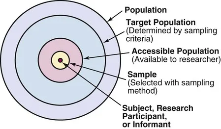
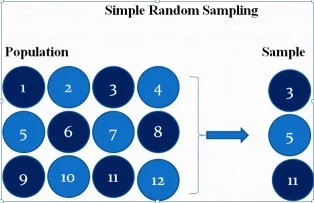
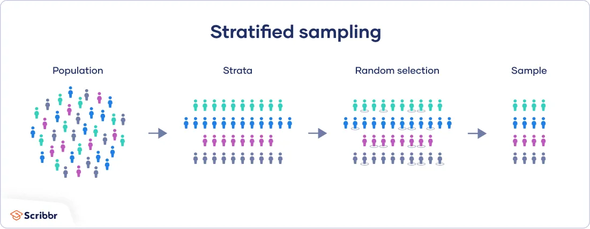
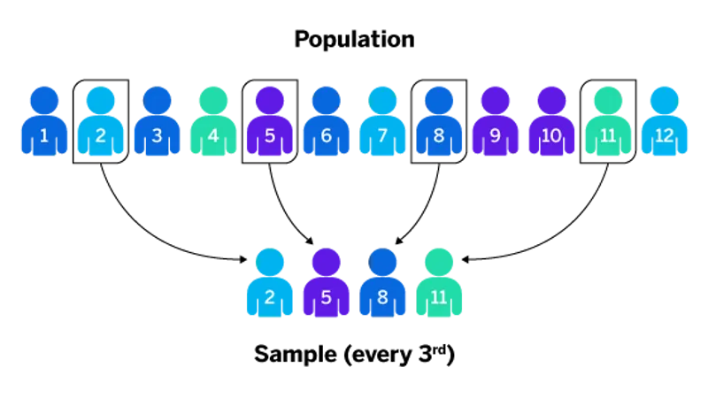
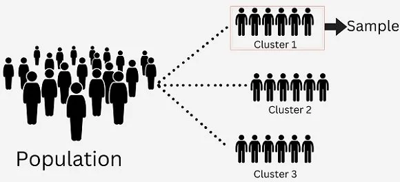
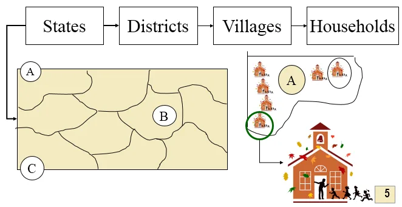
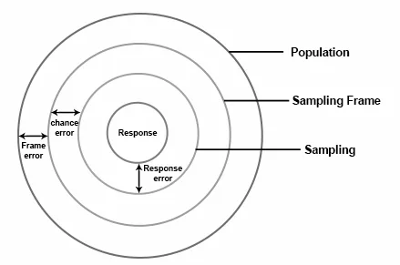

Expanded Nursing Uganda Explanation
Study Population & Sampling should be understood beyond a short definition. Link the concept to patient history, focused assessment, common risks, nursing priorities, documentation and evaluation of outcomes.
Contents — 28 sections (tap to expand)
01 Overview
Study population and sampling are helpful to the researcher in that it helps to classify the population that you expect to study. You are supposed to create a state that take population and provide a brief justification for this population and why you think it is the best population for this study.
02 DEFINITIONS:
- A sample: Is a subset (a part) of a population. Ideally, a researcher should use the whole population to collect data but resources may not be enough. Hence one has to resort to using a sample.
- A study sample: Is a subset of the accessible population that participates in the study.
- Sampling: is an act of selecting a small number of subjects upon which a study is conducted to represent the population. The result of the sample is assumed to represent the whole population. Sampling is not necessary if the population is small.
In normal circumstances, the bigger the sample size, the higher the level of accuracy.
- Sample size: these are the number of respondents to get involved in the study, For example, a sample size of 150 people.
- Population: Is the total of items or subjects in a set; with relevant characteristics that a researcher needs. It is the total number of potential respondents for the study.
- Target population: The large set of the population to which the results will be generalized – all teenagers with asthma, for example.
- Accessible population: Is the subset of the target population that is available for study – teenagers with asthma living in the investigator’s town this year, for example.
- Homogeneous population: consists of subjects with specific characteristics in common.
- Heterogeneous population: consists of subjects differentiated by specific identifiable features, for example, age, sex, educational background.
Sample study considers a subset of the population while census study considers/examines all members of a population.
03 Why (Importance of) sampling?
- To manage effectively large and dispersed populations.
- To minimize the cost of conducting the study.
- To save time.
- To improve on the accuracy of findings.
- To carry out a less demanding study.
- To reduce the level of destruction in case where sampling involves destroying items sampled.
- Common in medical research.
04 Sampling Methods
A sampling method is a procedure for selecting sample elements from a population.
- Random or Probability Sampling Methods
- Non-random or Non-probability sampling methods.
The choice of a sampling method depends on a number of factors. Some factors are the following:
- The type of population one is to sample from.
- The degree of accuracy one wants.
- The resources available, especially time and money.
- The homogeneity of the population.
- The urgency of the findings.
05 1. Random Sampling Method
Every element in the population has the same probability (equal chances) of selection.
06 Advantages of Random methods:
- Offers equal chances to all members in the set to be selected.
- Eliminates bias.
- Improves the validity of the study.
- Easy to administer.
- Provides statistical means of manipulating data.
07 Disadvantages of Random methods:
- They require a sample frame of all members of a finite population (a list of members).
- There may be a possibility of un-proportional representation of strata in heterogeneous populations (over-representing or under-representing).
Random sampling methods include:
- Simple random sampling.
- Stratified random sampling.
- Systematic sampling.
- Multistage sampling.
- Territorial sampling.
- Cluster sampling.
08 Simple random sampling:
The principle of simple random sampling is that every object has the same probability of being chosen (purely random).
There are many ways to obtain a simple random sample. One way would be the use of a lottery method.
Procedure of the lottery:
- Each member of the population is assigned a unique number or name. The numbers are written on similar pieces of paper, which are folded, placed in a bowl, and thoroughly mixed.
- Then, a blindfolded researcher selects one at a time without replacement until he/she has the required number of subjects in the sample.
Summary of Simple random sampling technique:
- Determine the population of interest by specific characteristics.
- Decide on the sample size.
- Create a sample frame (list all subjects).
- Select subjects randomly from the sample frame (using the lottery or a random number table).
Advantages of simple random sampling: See those for random sampling above.
Disadvantages of simple random sampling: In case of a heterogeneous population, one subgroup may be under or over-represented leading to bias.
09 Stratified random sampling:
A population may have subgroups in which a researcher is interested. For example, one may want to ensure that both girls and boys are represented in the sample.
The population is thus divided into subgroups or layers (strata) to represent the subgroups before the sample is drawn.
What is important is that the percentage of the subgroups in the sample must be the same as that in the population. For example, if the percentage of boys and girls in the population are 70% and 30% respectively, then the sample must also have 60% boys and 30% girls.
Stratified random sampling technique:
- Decide on a sample size,
- Create strata based on sound criteria (e.g., tribe),
- Decide on the number of representatives to pick from each stratum, and
- Randomly carry out the sampling.
Example: Consider a school with a total of 1000 students, where 600 are boys and 400 are girls, and suppose that a researcher wants to select 100 of them for a research study.
- The population has 600/1000 x 100 = 60% boys.
- The population has 400/1000 x 100 = 40% girls.
The sample of 100 must, therefore, have 60% boys = 60/100 x 100 = 60 boys.
Similarly, the subgroup of girls will have 40% girls in the sample = 40 girls.
Randomly carry out 60 boys from the strata of boys and 40 girls from the girls’ strata to make a sample size of 100 needed by the researcher.
10 Systematic sampling:
This method relies on arranging the target population according to some ordering scheme and then selecting elements at regular intervals through that ordered list. However, to avoid bias, the starting element has to be randomly chosen.
The number in the population is divided by the required sample to get the interval.
Example: Suppose you want to sample 8 houses (sample size) from a street of 120 houses (population).
120/8 = 15 (interval), so every 15th house is chosen after a random starting point between 1 and 15. If the random starting point is 11, then the houses selected are; 11, 26, 41, 56, 71, 86, 101, and 116.
Systematic sampling is the best method for a big homogeneous population. It is easy to administer.
Summary of Systematic sampling process:
- Define the population.
- List the sample frame of all members in a certain order.
- Determine the interval (population/sample size).
- Systematically sample the population using the interval beginning with a random starting element.
11 Cluster sampling:
Cluster sampling is a type of sampling that involves dividing the population into groups (clusters). Then, one or more clusters are chosen at random (from all clusters, a random sample is made) and everyone within the chosen cluster is sampled.
This method is useful when it is impossible to make a list of subjects scattered over a large area. Instead of making a list, a map of the area showing political, geographical, or other types of sub-division can be used in what we call cluster or area sampling.
12 Multi-stage sampling or multi-stage cluster sampling:
Using all the sample elements in all the selected clusters, as seen in cluster sampling above, may be prohibitively expensive or unnecessary. Under these circumstances, multi-stage cluster sampling becomes useful.
Instead of using all the selected clusters, the researcher randomly selects elements from each cluster; however, several levels of cluster selection are applied before the final sample elements are reached.
For example , household surveys begin by dividing metropolitan regions into ‘districts’ (first stage). The selected districts into blocks, and the blocks are chosen from each selected district (second stage).
Next, dwellings are listed within each selected block, and some of these dwellings are selected (third stage). This method makes it unnecessary to create a list of every dwelling in the region and necessary for only selected blocks.
13 Non-Random Sampling Methods
These are sampling methods where some elements of the population have no chance of selection; or where the probability of selection can’t be accurately determined. They are mainly used in qualitative studies.
14 Advantages of Non-random sampling methods:
- They are cheap.
- They have a less complicated approach to sampling.
- They offer faster results.
- They usually do not need to have a list of all members of the population.
15 Disadvantages of Non-random sampling:
- These methods are not random, thus prone to human error and bias.
- They are better applied when research findings are not generalized beyond the sample.
- Statistical analysis of sample results is not appropriate when non-random sampling methods are used. For example, a researcher cannot use statistical methods to define a confidence interval around the sample mean.
16 Convenient Sampling:
Sampling depends on the convenience of the researcher. The sample is selected on the basis of how accessible, convenient, and cooperative a subject may be. For example, if there are ten parishes, one can choose two parishes that are nearest to one.
17 Purposive/Judgmental Sampling:
The sampling depends entirely on the researcher’s interest and judgment. For example, one can choose to select only nurses on duty.
18 Snowball Sampling Method:
The respondents to be included in the study are recommended by colleagues who know they can offer good data. Each person interviewed suggests the next respondent to interview.
19 Quota Sampling:
Is a non-probability version of stratified sampling. In quota sampling, a population is first segmented into mutually exclusive sub-groups, just as in stratified sampling. Then judgment is used to select the subjects from each segment based on a specified proportion.
20 Accidental Sampling:
The respondents included in the study are not deliberately selected, but the sample is incidental to prevailing circumstances. For example, if you stand in front of the university gate and interview every student who passes by.
21 I. PROBABILITY / QUANTITATIVE / RANDOM SAMPLING DESIGN
- Sampling Techniques/ method Description of the method
- i) Simple Random Sampling (SRS) This is a probability sampling method where each element or participant has a known and equal chance of being selected into the sample. Probability of selection = n / N where n is the sample size that was determined under subsection 3.4 N is the study population or accessible population determined under section 3.3 Note that; SRS procedure includes the use of Lottery method or using Random numbers. This is the most flexible method and simplest probability sampling technique.
- ii) Systematic Sampling This is a probability sampling method where a researcher obtains the respondents (his sample) by selecting every Kth subject of the study population. The first respondent is selected randomly from the rank 1 to K. In this case K is the skip interval implying that the researcher will choose every Kth item for example if K is 10 then the researcher will choose all the 10th element K = N / n Where K is the skip interval size N is the study population or number of units of accessible population n is the sample size. Procedure is You start by numbering the elements in the study population from 1 to N. Compute the size of the skip interval "k" from K = N/n Determine the random start, any participant between 1 and K in the population. Then draw the sample by choosing every Kth element.
- iii) Stratified Sampling This is a form of sampling where the researcher divides the population into groups which are internally homogenous or subsets that share similar characteristics but externally heterogeneous (Heterogeneity between subgroups). In this case the whole population is referred to as a strata while as the individual groups or mutually exclusive populations are referred to as stratum for example a researcher may choose to divide an organization according to departments, gender of staff, age group of staff or level of education. Procedure appropriate After the sub populations are generated, then a simple Random Sample can be taken within each stratum then the results from the investigation or study can be weighted by the researcher, then combined into appropriate population estimates. Stratified Random sampling is mainly used because; It increases efficiency (reduces cost, time & efforts) Increases precision estimates Enables the researcher to use different research methods and procedures in different stratums.
- iv) Cluster Sampling This is a form sampling where the population is divided into many sub-groups (known as clusters) that are internally heterogeneous but externally homogenous (Researcher ensures homogeneity between sub-groups). The researcher then randomly chooses several subgroups or clusters that he/she then studies or examines in-depth in order to make inferences about the whole population. Considering Kampala District as a population. While using cluster sampling, this can be divided into Divisions which include; Nakawa, Kawempe, Rubaga, Makindye and Central, those divisions are the clusters. A researcher may choose to study these divisions or first subject them to further sampling for example Makindye may be divided into two sub-clusters that include; Makindye East and Makindye west then the researcher randomly selects sub-clusters & examines the clusters in details to make inferences about the entire population. Note that; Cluster sampling is usually adopted because it's highly economic efficient (can be implemented with minimal costs). As compared to SRS which states that every participant has a chance of being selected into the sample and the chance is equal for all members, PPS sampling assumes that each member of a survey population has a chance of being selected in the sample but the chance is not the same for all units it rather depends on the size of each unit. Therefore, the bigger the size of the element, the higher the likelihood of being selected into the sample. Therefore the definition and measure of size must be accurate enough. There are two basic forms of PPS, these include Probability Proportionate to Size with replacement sampling (PPSWR) Probability Proportionate to Size without replacement sampling (PPSWOR).
- v) Probability Proportional to Size sampling This is a sampling method where the researcher used more than one sampling method in a single study. The researcher therefore uses sampling at different stages to progressively select smaller Sampling Units (SU's) until the elements of the sample have been selected through a random procedure Use of Multi-stage sampling is common when using; Stratified Sampling where the study area is divided into subgroups known as stratums which are further subjected to SRS while selecting elements or the subgroups or stratums which may be considered as Primary Sampling Units (PSU's) and further sub divided into Secondary Sampling Units (SSU's) which are now studied in detail. Cluster sampling where the study area may be divided into clusters, which are the Primary Sampling Unit (PSU's) and they may be further divided into small units or sub-clusters which are considered as the Secondary Sampling Units (SSU's) which are now examined or studied in detail.
- vi) Multi-Stage Sampling For Example, A researcher may be interested in studying the "Prevalence of Domestic violence among of households of Tororo district in Uganda. In this case Tororo District will be considered as the study area but then subdivided into Counties (This is first stage sampling) then the selected counties are further subdivided into Sub-counties (this is the second stage sampling) then the selected sub-counties are further sub-divided into Parishes/ Wards (this is third stage sampling), then further the selected parishes/ wards are sub-divided into Villages/ Cells (this is forth stage sampling) and finally the researcher may use systematic sampling or simple Random sampling to select households into his sample for an in-depth study or examination. That is referred to as Multi-stage sampling or Sequential sampling or Multi-phase sampling
22 II. NON-PROBABILITY / NON-RANDOM SAMPLING DESIGN
- Sampling Techniques / method Description of the method
- i) Convenience sampling This is a form of non-probability sampling also known as Accidental sampling or grab sampling or opportunity sampling. Convenient sampling is therefore a non-probability form of sampling where a researcher selects an element to be part of the study population as long as it is easily accessible to the researcher. Note that; Under convenience sampling the proximity of a respondent to the researcher is a key determining factor in sample selection. This form of sampling is the easiest to conduct, does not require a lot of expertise and as well the cheapest. Convenience sampling is the least reliable sampling method. Example of Convenience Sampling; Journalists or news reporters collecting opinions about a burning issue in Nairobi, they use intercept interviews where they find anyone within Nairobi city either on the Streets, Vendors, Shop keepers, Taxi drivers, Boda-boda riders, Pedestrian or those in their offices and immediately request you to respond to their interview. This method is unreliable in the sense that most informants don't have authority about the subject area since they are just grabbed or intercepted.
- ii) Purposive sampling This is a non- probability sampling method also known as Selective Sampling or judgmental sampling or subjective sampling. This is a form of sampling where the researcher selects elements or informants that he/she believes are appropriate or connected to the study. Note that; The researcher will base his/her section of elements on; The objectives of the study, Characteristics of the population, Pre-determined selection criterion, Researchers interest & Experience of the researcher. Example of Purposive or Selective Sampling; A researcher examining "Conflict and staff performance" may choose to interview the HR manager of an organization because the researcher assumes that the HR is more informed about the subject matter than any other person in the organization. Therefore, in this case selection is done purposively
- iii) Snowball sampling This is a non-probability sampling technique also known as chain-referral sampling or chain sampling or Referral sampling. This is a form of sampling where the researcher finds it difficult to identify elements of the study but endeavors to identify the first element and this subject or element recommends or refers the researcher to the next element who subsequently refers to the next respondent/ element and the sequence continues until the researcher gets the required information or reaches the saturation point (where no new ideas are being generated). Therefore the sample increases in a chain style. As the ball rolls down, it keeps increasing through picking up relevant elements. Examples of elements that are difficult to identify may include; A study where key informants are Professors in Botany, Professors Zoology or even in Professors Statistics you may need to first identify one professor and then have him or her lead you to subsequent professors since they tend to know each other. A study where key informants of interest are Thieves, Prostitutes, Homosexuals & Lesbians among others.
- iv) Quota sampling This is almost the same as stratified sampling but the difference is that in this case there is no randomization. Note that; The above cases among others are very difficult to identify and you need to win the confidence of one to lead you to another. Therefore quota sampling is a non-probability sampling technique where the population is divided into subgroups that are internally homogenous. These sub-groups are then studied and inferences then made. For example; If the study population is the MBA 15 class, the researcher may choose to have a sub-cohort / group of female and another for male or have marrieds and un married students or working and non-working students, in this case the researcher will not use any statistical method while subdividing the population. Note that; The pertinent issue is that, these cohorts must be internally homogenous (With common characteristics) and arrived at using non-randomization technique
These include;
- Probability or Random or Quantitative sampling design
- Non-probability or Non-Random or Qualitative sampling design.
These designs can be used differently but in a study where the research approach is mixed methods then the researcher may triangulate both probability and non-probability sampling design.
23 REASONS WHY YOU SHOULD USE SAMPLING THAN A CENSUS
- In academic research it's usually a university policy that binds a student/researcher to use sampling as compared to a census.
- Sampling is more economical, using a sample requires little resources than a census. Resources in form of Materials, Technology, Time & Finances among other.
- Sampling leads to increased coverage, As compared to a census, sampling enables the researcher to cover a greater scope in terms of content and geographical scope.
- Results of sampling are considered to be more reliable and accurate, while conducting a census you may need to employ a lot of research assistants, data entrants & data analysts which compromises quality as some of these may not be experienced in the field while as you need very few but experienced staff for a sample survey.
- Sampling yields timely results, as compared to a census which may even take more than a year, a sample survey provides results urgently.
- Sampling promotes easy accessibility, since not all elements are always accessible. Remember you always have a target population and the accessible population, therefore this gives sampling an advantage over a census which ignores issues of inaccessibility of some elements of the population.
- Sampling data is usually of a better quality than census data
- Destructive or contaminative nature of many populations. Among other reasons.
- Greater speed of data collection, a researcher can easily collect all the required data in a sample than in a census.
- It's easy to analyze data from a sample than that of a census since there is less data in samples than a census; therefore sampling reduces on the likelihood of non-sampling errors.
24 Sampling Errors
Sampling errors are the unavoidable differences between a sample's calculated statistics (e.g., mean, proportion) and the true, unknown population parameters, occurring simply because a subset rather than the entire population is measured. These, along with non-sampling errors, form total survey error. Increasing sample size reduces this error.
Causes: Primarily due to random variations in selecting samples ("luck of the draw") or, in some cases, biased selection methods.
Types:
- Population Specification Error: Incorrectly defining the population for the study.
- Sampling Frame Error: Using an inaccurate or incomplete list of the population (e.g., using a phone book that excludes unlisted numbers).
- Selection Error (Sample Bias): Instances where the sample is not representative of the population, such as using convenience sampling.
- Sample Size Error: Samples that are too small to yield accurate, reliable data.
- Random Error: A wrong result due to chance. This can be overcome by increasing the sample size.
- Systemic Error: A wrong result due to bias.
Calculation: The margin of error (a common, practical measure of sampling error) is calculated by multiplying the standard error by the z-score (e.g. for a 95% confidence level).
Reduction: To minimize, increase the sample size and ensure the sampling method is truly random or representative.
25 Nursing Uganda Clinical Lens
Use Study Population & Sampling as a practical nursing topic, not only a memorized definition. Translate theory into safe decisions, accountability, communication and service improvement.
- What to understand first: define study population & sampling, identify the normal or expected pattern, then explain what changes when the patient is unwell.
- Why it matters in care: the nurse must recognize risk early, explain findings clearly, document accurately and know when to escalate.
- How to revise it: connect each point to assessment, nursing diagnosis or care problem, intervention, rationale and evaluation.
26 Assessment Guide
- The problem, stakeholders, available resources, policy requirements and ethical issues.
- Risks to patients, staff, confidentiality, quality, costs and continuity.
- Documentation, reporting lines, supervision and evaluation measures.
27 Nursing Priorities, Rationales and Outcomes
- Use evidence, policy and professional standards to guide action.
- Communicate clearly, document decisions and protect confidentiality.
- Evaluate whether the action improves safety, learning or service delivery.
The rationale for these priorities is patient safety: nursing actions should prevent deterioration, reduce discomfort, support recovery and create clear evidence for the next caregiver.
- Expected outcome: The plan is documented, realistic, ethical and improves patient care or learning outcomes.
28 Patient Teaching and Revision Check
- Explain study population & sampling in simple language the patient or caregiver can repeat back.
- Teach warning signs, medicine or follow-up instructions, hygiene or lifestyle points where relevant.
- For exams, prepare a short answer using: definition, causes or risk factors, signs, assessment, management, complications and prevention.
- For ward practice, document baseline findings, actions taken, patient response and the plan for review.
Illustrations and Diagrams (9)







1 more diagram available — open the lesson for full illustrations.
Related Video Lectures
Watch nursing lecture videos on YouTube for this topic. Opens in a new tab.
Watch on YouTubeExternal link: YouTube may use its own cookies and terms. Nursing Uganda is not affiliated with YouTube.